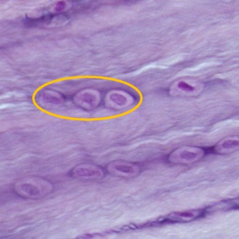

c. Vezelig kraakbeen (fibreus kraakbeen)
Dit is het meest stevige type kraakbeen. Het is opgebouwd uit duidelijk zichtbare parallel gerangschikte dikke collageen type I vezels die bundels vormen waardoor de chondrocyten in hun lacunes tussen deze bundels typisch in rijtjes komen te liggen.
Vezelig kraakbeen komt voor op plaatsen waar weerstand moet geboden worden aan grote druk- of trekkrachten, zoals bijvoorbeeld als verbinding tussen beide schaambeenderen, in tussenwervelschijven of aanhechtingsplaatsen van pezen aan het bot.
Dit is het meest stevige type kraakbeen. Het is opgebouwd uit duidelijk zichtbare parallel gerangschikte dikke collageen type I vezels die bundels vormen waardoor de chondrocyten in hun lacunes tussen deze bundels typisch in rijtjes komen te liggen.
Vezelig kraakbeen komt voor op plaatsen waar weerstand moet geboden worden aan grote druk- of trekkrachten, zoals bijvoorbeeld als verbinding tussen beide schaambeenderen, in tussenwervelschijven of aanhechtingsplaatsen van pezen aan het bot.

Vezelig kraakbeen wordt gekenmerkt door de aanwezigheid van stevige collageen type I vezels die bundels vormen in de matrix. Deze kan je zien in LM preparaten. Ze zijn zo stevig dat de chondrocyten in een rijtje achter elkaar komen te liggen. Zo krijg je erg kenmerkende isogene groepen (oranje omcrikeld).
Vordering zelfstudie kraakbeen: